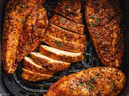

Home
Air Fryer Chicken

A healthy Nutritious Protein
Ingredients
- Chicken Tenders
- Olive Oil
- Salt
- Pepper
Steps
- preheat air fryer 400f for 5 minutes
- Pound uncooked tenders until it is evenly thin
- pour olive oil in plate and marinate chicken inside
- add salt and pepper generously
- evenly distrubite chicken in basket and set for 400f 15-20 minutes